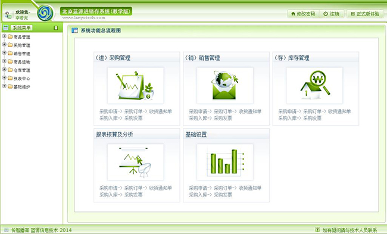
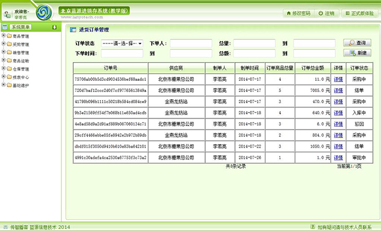
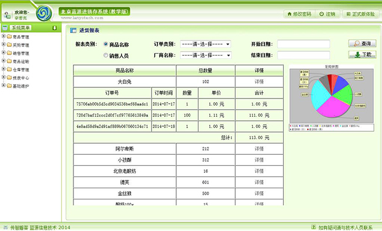
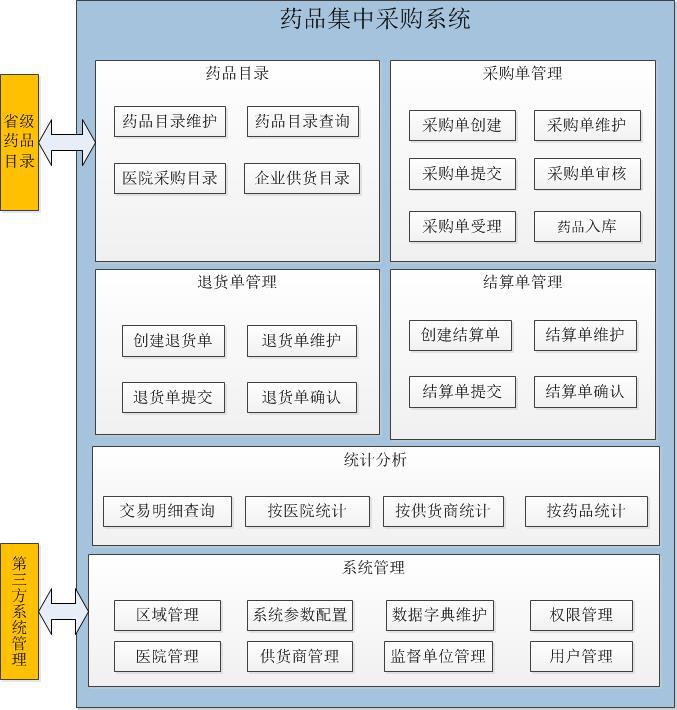

2015年JavaEE+hadoop大数据就业班课程详解
全价16980元，优惠价只要15980！（享受优惠价的条件是什么？)
JavaEE+hadoop大数据就业班赠送“Hadoop2周末班课程”，加料不加价！
—— JavaEE技术已经稳定地占据市场10多年了，目前仍牢牢地占据着企业级开发的市场，仍然是市场招聘岗位非常多的技术。今天到智联招聘上搜索“Java”关键字，你可以搜索到2万~3万个职位。人才缺口及其之大！！！而且随着中国经济的飞速发展，相信人才缺口将会越来越大。
—— 传智播客从2006年创办至今已培养了数以万计JavaEE开发者，其中佼佼者很多自行创业，或成为大中型IT企业的骨干。就业于IBM、HP和ORACLE、腾讯、百度、联想、阿里巴巴，华为等国内外知名IT企业的学员不在少数。
—— 传智播客2015年对JavaEE课程体系进行了优化和加强，并增加了JqueryEasyUI 、Activiti、maven、spring mvc、mybatis、shiro、jfeechart、apache poi、webservice、lucene、solr(集群)、nosql之redis(集群)、linux、Nginx(主从)+Tomcat集群、hudson、Oscached 、freemarker、Kind Editor、powerDesigner和visio、mysql集群、CMS 内容管理系统，单点登录和云计算之大数据等技术，知识紧密结合企业的热门需求，授课进度更加科学合理。
—— 传智播客近百人的Java讲师团队大多数都是年薪40万以上的开发人员、技术总监、架构师等技术大牛。讲师们把当前市场中紧俏、热门的技术融入到我们的课程体系中，使我们的课程体系与真实的企业级开发紧密结合，项目都是真实的商业化大型项目。传智播客经过多年的积累，现今已有数万老学员，通过老学员获取市场的新动向，吸收新颖、紧俏的技术，不断更新我们的课程体系，改造项目。真正做到以就业、高薪就业为导向。试问没有雄厚的实力怎能聘请牛掰的讲师；没有数以万计的老学员作为渠道怎能跟的上市场的瞬息万变。传智播客欢迎大家来参观、试听，传智播客的规模和实力是可以看到的。
—— “不管是推进政府的简政放权，放管结合，还是推进新型工业化、城镇化、农业现代化，都要依靠大数据、云计算。所以，它应该是大势所趋，是一个潮流”。“为了增加就业从而增加人民的收入，坚定不移地支持电子商务 跨境电子商务，以及云计算、大数据、物联网的发展”。在市场的大力支持下，传统的软件开发模式即将发生巨大的变革，随之而来的软件开发模式将会是“终端+云”或“终端+Server+云”模式。因此，物联网时代下的程序员如果不掌握云计算技术将会被时代所淘汰。尽管云计算技术在2011年才刚刚落地，但来势异常凶猛，胜过之前Java中的任何一种技术。传智播客在新的JavaEE课程体系中引入了云计算技术，传智播客对外推出真真实实的云计算技术培训，绝非挂羊头卖狗肉，绝非冠名忽悠。
本课程重点培养掌握JavaWEB、 jdbc、mysql、Oracle、Struts、Hibernate、Spring、spring mvc、mybatis开发技术的实战与理论双结合型工程师，并重点讲解jfeechart、apache poi、webservice、lucene、solr(集群)、nosql之redis(集群)、linux、Nginx(主从)+Tomcat集群、hudson、Oscached 、freemarker、Kind Editor、powerDesigner和visio、mysql集群、CMS内容管理系统众多JavaEE热门技术。通过本课程多个真实项目的训练，学员还可掌握软件架构设计思想、搜索引擎优化、工作流技术、缓存系统设计、网站负载均衡、系统性能调优等软件编程高级技术。（注：此课程包括传智播客 “JavaEE+hadoop大数据冲刺班招生简章" 的全部课程）
本课程适合于计算机专业，有一定Java基础、通过入学考核的未就业人士（查看入学测试题）。
提示：测试题主要考察您是否具备Java基础，以便我们统一入学基础，更好地开展教学工作。如果您感觉测试题很容易，并且您又具备JavaWEB、数据库基础，我们建议您选择更高端的JavaEE+hadoop大数据冲刺班学习（查看JavaEE+hadoop大数据冲刺班招生简章）；如果您感觉测试题很难，我们建议您从我们网站下载Java课程视频，先打好Java基础再学习这门课程；或参加我们的Java入门预热班学习Java（查看Java基础与加强班招生简章）。
一、师资强：如果你的目标是就业，并且是高薪就业，那么传智播客是你正确的选择
传智播客近百人的Java讲师团队大多数都是年薪40万以上的开发人员、技术总监、架构师等技术大牛，并且有相当一部分老师还是Java技术系列书籍的作者。由这样的Java书籍原创作者讲课可想而知。课程条理清晰、讲解清楚，知识面广、深度足够！牛谁都会吹，但我们的实力是不用吹的。
我们出版的书籍从基础到深入均有，大部分都是重印两次以上的畅销书，部分书籍如下：（更多...）
我们的项目都是讲师在做开发时的真实项目，再加以改造的。为什么我们的项目还要改造呢？因为我们无时无刻不在吸取当前市场上新颖、主流、紧俏的技术，把这些技术融入到我们的项目中。做到这一点绝非十几二十个人能办到的，我们是通过近百名讲师，以及数以万计的老学员与市场接轨，再由专业的团队打造出来实用项目。没有雄厚的资金就没有牛掰的讲师，没有数以万计的老学员，就无法把握市场的方向。
我们的教学质量与深度如何？有视频为证。部分视频如下：
Java基础入门视频 、 JavaWeb视频、 Strut2视频、 Android基础视频、 巴巴运动网项目视频、Hadoop从入门到上手工作视频、更多的视频请点击这里
二、国内就业课程相当完善的java培训机构
课程体系是否完善、深入，可以通过课时量、教学方式，以及课程内容做个基本了解。传智播客的JavaEE就业班课时量在4个半月左右（不包含基础内容），每上2天课休息1天（有时3天休息1天的时候），每天6小时。教学方式为讲师全天讲课。课程内容方面我们更能突显出优势，例如内容JavaWEB、 jdbc、mysql、Oracle、Struts、Hibernate、Spring等课程，我们讲解的更加深入、透彻，由浅入深，剖析原理，真正做到知其然，也知其所以然。我们讲解的实用内容，例如JqueryEasyUI 、Activiti、maven、spring mvc、mybatis、shiro、jfeechart、apache poi、webservice、lucene、solr(集群)、nosql之redis(集群)、linux、Nginx(主从)+Tomcat集群、hudson、Oscached 、freemarker、Kind Editor、powerDesigner和visio、mysql集群、CMS 内容管理系统，单点登录等内容，更是由浅入深，剖析原理，让学员掌握实用技术，绝非蜻蜓点水式的教学。特别是传智播客新增的云计算之Hadoop课程，将学员打造成市场所需的高薪开发人员。传智播客的很大一部分老学员已经成为公司的骨干、高层，甚至自行创业，年薪高达20w到40w之间者不在少数，这些老学员经常与传智播客的就业服务部联系，招聘精通JavaEE的朋友。
三、项目真：让你切身感受到什么才是实用的商业项目，绝非毕业设计层级的OA/ERP/CRM等Demo项目
在当今到处都是大忽悠的环境下，传智播客拒绝忽悠，教学所用的项目来自于真实的商业项目（如：新巴巴运动网、蓝源装饰行业ERP系统、中国移动电子商城），项目公布于互联网上，可以经受的起广大同学及业内人士的检验。所以建议大家，你可以不选择传智播客，但一定要对培训机构进行检验，忽悠的话，只要文笔好的人都会写，但真实的项目是吹不出来的，所以一定要让培训机构公开其项目网址进行检验，以防上当。请不要相信“只要你来公司就可以看到项目演示”之类的话，如果真有实力，为何不敢对外公开展示？
四、课程深：方能让你在职业竞争中鹤立鸡群，不但能找到工作，更能找到一份好工作
受全球金融危机的影响，IT行业萎缩、人才需求下滑，现在的情况是：一个工作岗位往往几百人竞争，队伍中更是不缺乏具有一、二年工作经验的开发人员。如何让自己在几百人的竞争中脱颖而出？没有他途，只有把技术学的更深入，更牛，方能取胜。传智播客的课程不但可以让你找到工作，更能让你找到一份好工作。那么传智播客毕业的学生，有没有没找到工作的？可以肯定地说：“有”。由于传智播客的课程较深入，每个班偶尔会有一两个同学坚持不下来，睡懒觉，9点上课，10点才来，课下也不动手练习。试想，如果自己不付出努力，再强大的师资，再好的课程也是无法帮助他就业的。对于这些个别同学，传智播客只能建议他复读，一些愿意回来复读的同学经过认真学习后能找到工作。只要你自己坚持信念，再配备班主任老师、技术辅导老师、就业指导老师、授课讲师帮助，让你就业及高薪就业不是梦。
五、社会认可：IBM、SOHU、用友、神州数码等在职软件工程师曾推荐自己的亲戚朋友到传智播客学习
传智播客是CSDN投资的公司，借助CSDN平台，传智播客聚集了一批讲师。有相当一部分老师在IT业界是颇有知名度的，而且有些老师还是推动某个技术普及的先行者（如果你认为我们是吹牛的话，就用baidu/google去检验吧）。由这些精英共同制定的课程不但反映了主流技术，还具有前瞻性。正因为传智播客在软件界内被广泛认可，所以在招收的学生当中，就有相当一部分是在职软件工程师推荐过来的。
第一阶段：JavaWEB 部分一之WEB前端
| Html |
HTML语言，HTML语言背景知识、整体结构、文件标签、排版标签、块标签、字体标签、列表标签、图形标签、超链接标签、表格标签、表单标签（form标签、input标签、select标签等）、分区标签、头标签 实战：编写WEB阶段第一个首页（穿了衣服） |
| CSS |
CSS介绍、CSS导入方式（内部样式表、内联样式表、外部样式表）、五大CSS选择器（ID选择器、类选择器、元素选择器、属性选择器、伪类等）、样式属性介绍 实战：为第一个首页添加样式（化了妆） |
| JavaScript基础 |
JavaScript编程，JavaScript语法、数据类型、运算符、表达式、流程控制，JavaScript内部对象、数组、字符串、日期时间、数学函数、正则表达式，JavaScript函数、自定义函数、全局函数，BOM介绍、window对象、location对象、history对象使用。 DHTML编程，理解DOM树，DOM对象，常用DOM对象的属性、方法 和事件，编写事件处理程序、使用DOM操作HTML文档、遍历文档树上的节点、搜索文档中特定的元素、修改文档内容、往文档添加新内容、使用DOM操作 XML文档。 实战：表单校验 |
第二阶段：JavaWEB 部分二之 mysql数据库 + JDBC开发
| Mysql |
数据库使用、mysql的安装与卸载、mysql账号管理，SQL语句介绍、数据库增删改操作DDL语句使用、表增删改操作DML语句使用、表查询操作DQL语句使用、以及查询语句条件、排序、聚合、分组操作。 |
| JDBC开发 |
JDBC介绍、驱动的原理及使用、JDBC核心使用、DriverManager、Connection、Statement、ResultSet详细使用，JDBC的CURD操作、 |
第三阶段：JavaWEB 部分三之JavaWEB开发技术+WEB实战项目+网上在线支付
| 核心技术课程 |
XML的概念与基本作用、XML的基本语法、XML的约束模式、DTD、XMLSchema、名称空间。XML解析介绍、SAX解析、DOM解析、DOM4J CURD操作、XPath的使用。 WEB服务器的工作原理、Tomcat的安装与启动运行、Tomcat的体系结构、在Tomcat中配置WEB虚拟目录与发布WEB应用程序的方式、设置目录的默认网页、使用Tomcat配置虚拟主机、WAR文件生成与使用。HTTP协议详解。 Servlet简介、Servlet生命周期、servlet配置详解、访问servlet路径分析、ServletConfig使用及servlet初始化参数的使用，ServletContext使用、系统初始化参数、web资源获取，HttpServletResponse和HttpServletRequest的应用、HTTP协议在web开发中应用、请求转换与重定向使用，Cookie及Cookie的应用，HttpOnly的cookie，Cookie实现商品浏览历史记录、Cookie实现记住用户名和密码,Session及Session域的应用，Session跟踪机制，利用Session防止表单重复提交，MD5算法及其应用，Session的持久化。 实战：一次性验证码案例、购物车案例 JSP技术：JSP运行原理、JSP中的9个内部对象和作用、JSP表达式、JSP脚本片段、JSP声明、JSP注释,EL表达式简介，EL获得数据、EL执行运算、EL内置对象、EL函数，page指令及其重要的属性：import、session、errorPage、isErrorPage、contentType、pageEncoding、isELIgnored、在web.xml文件中设置全局错误处理。JSP中的include指令及其典型应用。pageContext对象的详细讲解。JSP动作标签介绍。JSTL标准标签库的介绍及使用。JSP模式介绍、MVC模式介绍、JavaBean介绍、BeanUtils使用。 实战：用户注册、用户登录 数据库高级开发：mysql事务使用、JDBC事务使用、事务特性、事务隔离级别，连接池介绍、DBCP连接池使用、C3P0连接池使用、tomcat内置连接池使用。DBUtils介绍、DbUtils类的使用、QueryRunner类的使用、ResultSetHandler详解。多条件查询实现及原理分析、分页实现及原理分析。 实战：转账汇款 AJAX开发：AJAX介绍、XMLHttpRequest对象详解、JSON介绍、JSONLIB插件的使用 实战：用户名是否重复、商品信息模糊查询。 JavaWEB高级开发技术：Servlet Listenert监听器介绍及使用、Servlet Filter过滤器介绍、过滤器生命周期、过滤器链分析、FilterConfig介绍。文件上传介绍及原理分析、commons-fileupload使用、上传实际问题分析及解决，文件下载及下载文件中文乱码处理。自定义标签：自定义标签介绍、标签接口继承结构树介绍、SimpleTag使用、TLD文件配置、执行流程简单分析。 基础加强之框架加载：注解介绍、自定义注解介绍、元注解使用、代理介绍、动态代理Proxy使用、类加载介绍、自定义类加载器、泛型+反射高级应用。 |
| 阶段案例 | 网上在线支付模块：本系统是为互联网客户提供在线支付功能，可立即应用于项目中。 电子商务项目 – 在线图书销售系统：本系统实现网络的图书管理 图书销售等功能。 该项目采用经典的MVC设计模式，从需求分析到编码将涉及到Java Web大部分常见的技术，让学员理解真实项目的软件开发流程（分析、设计、编码、测试、部署），通过此项目的锻炼学员可以熟练掌握基本的Java Web开发和复杂问题的解决方案，为后面的学习奠定基础., 同时又为成功就职软件企业迈出坚实的一步。 |
第四阶段：框架部门之Struts2+Hibernate3+Spring3+Maven+CVS/SVN+项目管理+CRM项目
| 核心技术课程 |
Struts2框架介绍、工作原理与架构分析、6大配置文件分析、struts.xml详解及使用，使用通配符定义action、动态方法调用，ActionContext及ServletActionContext使用，模型驱动ModelDriven、属性驱动，默认转换器的介绍，Struts2中的表单校验，Struts2中的国际化，Struts2中文件上传、多文件上传、文件下载，默认拦截器分析、自定义拦截器、OGNL表达式、值栈ValueStack分析及操作、Struts2标签、TOKEN机制、struts2 json使用。 实战：CRM案例之用户登录 高级Hibernate开发技术：ORM思想，hibernate介绍，hibernate.cfg.xml配置，hbm.xml映射文件详解，主键生成策略使用，PO对象状态及状态的转换分析、一级缓存，Hibernate数据检索技术，Hibernate高级映射技术，Hibernate多表联合查询， Hibernate二级缓存技术，Hibernate分页技术，Hibernate性能优化技术。 框架介绍，IoC思想、DI依赖注入、Bean的实例方式、Bean种类、Bean作用域范围、Bean生命周期管理、依赖注入、p命名空间、SpEL spring表达式、注解装配Bean、整合Junit测试、WEB开发集成spring、AOP思想、AOP原理解剖、spring 传统aop开发、AspectJ介绍及使用、JdbcTemplate模板使用、C3P0数据源配置、DBCP数据源配置、声明式事务管理、注解事务管理。SSH xml整合、SSH注解整合。 是什么、为什么使用Maven、什么是一次构建、什么是依赖管理、依赖管理的好处、Maven如何安装配置、使用Maven核心概念介绍( 坐标、依赖、仓库、插件、生命周期等)、Maven与第三方Elicpse整合及如何在Eclipse中使用Maven、什么是私服、Maven为什么使用私服、Maven私服Nexus的安装使用、如何使用Maven构建Web应用、使用Maven构建SSH应用、使用Maven进行测试、什么是持续集成等。 CVS/SVN介绍及开发环境搭建、代码版本管理的使用。 ：为什么要学习项目管理，项目管理的重要性；到底什么是项目及项目管理？如果你是项目经理，如何运作自己的项目？项目究 竟应该如何做？国际项目管理框架介绍；如何拓展项目管理应用的宽度？项目管理与人生；失败项目问题解析；项目经理应具备的能力及心态；学习了项目管理，工作后如何应用？如何让自己的职业生涯比别人提前2-4年？项目管理深入学习路径介绍；工作后的职业发展智慧分享。 |
| 项目课程：CRM项目 |
通过该项目让学生掌握如何使用struts2+spring3+hibernate3 +svn来开发项目。通过划分小组来模拟实际开发，通过小组内成员之间的协同合作完成整个项目的开发。在团队开发中熟练掌握SVN的使用。在整个开发过程中熟练掌握SSH 三大框架的使用。同时让学生进一步深入掌握如何分析、如何设计、如何编码、如何测试、如何部署等软件开发流程。 |
第五阶段：JavaScript高级+AJAX/Jquery+JQueryEasyUI+Activiti工作流+ oracle+数据库优化+luncene/solr+webService+springMVC+MyBatis+Jfreechart/Poi+redis
[注:传智播客是国内讲解EJB3.0技术的培训机构，EJB3.0目前在企业中应用更少，如果有同学需要，我们可以提供传智播客原创的EJB3.0视频和电子书稿]
|
JqueryEasyUI简介、EasyUI入门、Draggable(拖动)组件、ToolTip(提示框)组件、LinkButton(按钮)组件、ProgressBar(进度条)组件、Panel(面板)组件、Tabs(选项卡)组件、Layout(布局)组件、Window(窗口)组件、Dialog(对话框)组件、Messager(消息框)组件、DataGrid(数据表格)组件、Tree(树)组件、Form表单、DataGirdCRUD案例。 |
|
|
jQuery及其选择器：认识JQuery、选择器介绍、css选择器、jQuery选择器及其优势势、基本选择器、层次选择器、过滤选择器、表单选择器、选择器练习小案例等； JQuery操作DOM：DOM分类、查找元素/属性节点、创造元素/属性/文本节点、插入节点、删除节点、复制节点、替换节点、包裹节点、属性操作、样式操作、遍历节点、CSS-DOM操作； 动画和事件：jQuery中的事件、加载DOM、事件绑定、合成事件、事件冒泡、事件对象的属性、移除按钮上注册的事件、模拟操作、JQuery中的动画、jQuery与ajax的应用、插件的使用和写法、商城前端页面开发案例。 |
|
| JavaScript |
JavaScript课程介绍：JS在项目中的使用、面试需要、理解JS类库、职业规划等； JavaScript课程回顾：浏览器介绍、JavaScript历史回顾、JavaScript技术回顾、JavaScript练习题讲解； JavaScript引擎介绍：JavaScript引擎的概念、JavaScript引擎的工作内容、不同浏览器下不同的JavaScript引擎； 变量的作用域：区分基本变量和引用变量、掌握测试基本类型变量和引用类型变量的方法、变量的作用域、全局变量与最外层函数、体会基于对象和面向对象； Arguments对象的讲解、特殊函数的讲解、闭包的详细讲解、JavaScript创建对象、原型、创建对象分析、内置对象、继承、构造自己的JS库、JavaScript案例练习。 |
|
什么是流程、工作流作用、Activiti背景简介、Activiti流程设计器安装、Activity环境搭建、通过HelloWorld掌握 Activiti操作流程的步奏、常见API使用、流程部署管理(发布流程、查看流程定义、删除流程、查看流程附件)、流程实例管理(启动流程、查看任务、认领任务、办理任务、查看流程状态)、查看历史信 息(历史流程实例、历史流程活动)、流程变量的相关操作、常用流程节点介绍、流程规则测试、监听器的使用、Activiti和三大框架集成、流程执行相关操作(流程启动、任务查看、当前流程图查看、任 务表单查看、任务执行)、历史流程查看、任务分支时的解决方案、流程批注。Activiti工作流在项目中的应用。 |
|
|
Oracle介绍、Oracle10g的安装、PLSQL Developer的安装、PowerDesigner的安装、orcale的基本概念介绍、命令行常用操作、Scott用户下的表结构介绍、sql简介、简单查询、限定查询、对结果集排序、单行函数、多表查询、子查询、数据库变更、事务处理、表的管理、约束、rownum、视图、序列、索引、pl/sql、存储过程、存储函数、触发器以及游标的讲解。 |
|
|
什么是webservice、socket远程调用、jax-ws远程调用、webservice应用场景分析、wsdl、wsimport、soap协议、soap传输xml、cxf基础知识、cxf实现webservice、cxf和spring整合、cxf综合案例。 |
|
|
权限管理基础、基于url拦截实现权限控制、Shiro入门、Shiro认证、Shiro授权、自定义Realm、Session管理、Shiro与Spring集成、Shiro与web集成、Shiro缓存、基于资源的权限管理综合案例。 |
|
|
Lucene内容：什么是全文检索、Lucene实现全文检索分析、Lucene实现全文检索程序实现、Analyzer分析器、索引维护、Query和QueryParser、相当度排序； Solr内容：企业站内搜索技术选型、什么是solr、solr安装配置、solr索引、solr搜索、SolrJ、SolrCloud、电商网站商品搜索综合案例。 |
|
|
NOSQL介绍、什么是redis、redis与memcached的区别、redis安装配置、redis数据类型及操作（String、Hashs、Lists、Sets、Sorted Sets）、常用命令、事务控制、发布订阅、持久化、主从复制、高可用集群搭建。 |
|
|
Mybatis介绍、单独使用jdbc编程问题总结、Mybatis架构、Mybatis入门程序、Mybatis开发Dao、SqlMapConfig.xml配置、ParameterType输入映射、ResultType及ResultMap输出映射、动态sql、商品订单数据模型、关联查询（一对一、一对多、多对多）、延迟加载、查询缓存（一级缓存、二级缓存）、Mybatis与Ehcache整合实现二级缓存、Mybatis与spring整合、Mybatis逆向工程。 |
|
|
Spring web mvc介绍、Web MVC应用、Spring web mvc架构、springmvc入门程序、非注解处理器映射器和适配器、注解开发处理器映射器和适配器、springmvc整合Mybatis、RequestMapping、Controller方法返回值、参数绑定（简单类型、pojo、包装类型、数组、集合类型等）、springmvc与struts2区别、springmvc上传图片、json数据交互、Validation、异常处理器、RESTful支持、拦截器。 |
第六阶段： 新BOS物流管理系统/企业协同OA项/目国家电力项目/ERP项目+杰信商务平台/新巴巴运动网/移动电子商城/药品集中采购系统
| 项目课程：新BOS物流管理系统 |
项目介绍: 新BOS物流系统是某大型物流公司的核心综合业务系统，实现“决策、管理、操作”一体化运作。在整个业务运营系统实施过 程中强调：统一标准是基础，数据集成是手段，优化资源是目的。系统在满足各层基本操作功能需求的同时，做到管理层协调管理的简单化，进行有效控制运营；为高层提供灵敏的决策分析指标和报表 ，满足决策的要求。该项目包含如下几个模块:. 项目特色: 1、项目整体采用Maven构建、SVN版本控制、PowerDesigner数据建模，基于约定标准的项目工程结构，同时讲解了很多主流Maven插件的使用配置。2、页面部分完全采用JqueryEasyUI 框架完成，使用了EasyUI提供的layout、accordion、tabs、menu、linkbutton、form、validatebox、numberbox、datebox、combobox 、searchbox、datagrid等主流控件，通过项目学习，可以完全掌握EasyUI的使用，并具有企业级项目前端页面的设计能力. 3、基础信息管理功能，都是基于datagrid数据表格完成，集数据展示、排序、分页、编辑于一体，大量使用Ajax交互，提升项目客户体验，与服务器实现技术进行解耦；服 务器端则采用自定义分页工具类、业务接口，通过代码重构，大量简化分页代码编写。 4、DAO数据访问层，通过泛型结合反射技术，设计通用DAO接口，只需要一个实现类就可以实现所有数据表的增删改查、分页等功能。 5、定区管理功能，基于WebService实现与CRM系统的远程通讯，这里分析主流RMI远程交互技术，并使用Hessian二进制传输格式，完成高性能数据交互。 6、工作单管理功能，使用数据表格行编辑录入方式，简单高效，在大量工作单数据模糊查询功能部分，采用Lucene 结合IK分词器对工作单信息建立全文索引库，以提高工 作单数据查询性能 7、使用自定义权限数据模型，结合Apache shiro框架完成方法级别细粒度认证、授限控制，其中使用了注解标记权限、自定义标签、动态Ztree权限菜单等主流功能。 8、中转管理模块，对分拣流程、配送流程、返货流程，引入Activiti工作流进行流程控制，涉及Activiti流程动态节点、自由流转等复杂使用。 9、对数据查询优化，大量采用缓存技术，通过Spring与Ehcache缓存技术结合使用。 10、项目报表管理模块，支持POI、IText导出 Excel和PDF格式报表文件。 项目截图: |
| 项目课程：企业协同OA项目 |
项目介绍: OA简称 Office Automation，称为办公智能化。是提高办公效果的系统。现在的信息社会，对公文流的处理和流程的处理是OA办公的重点 。基于工作流的概念，使企业内部人员方便快捷地共享信息，高效地协同工作；改变过去复杂、低效的手工办公方式， 实现迅速、全方位的信息采集、信息处理，为企业的管理和决策提供科学的依据， 是企业提高整体运转能力不可缺少的软件工具。 项目特色: 1、该项目采用了struts2 hibernate spring三大框架完成，而这些技术都是当下流行的技术。2、在项目框架搭建的过程中，该项目剖析了底层的struts2代码。运用了静态注入、ObjectFactory、ActionProxy等struts2的高级特性。 3、在知识管理模块，采用struts与ajax结合实现了无刷新，ajax提交应用了jQuery框架。 4、在该项目中，应用了js的面向对象编程。应用了js的高级特性：回调函数、匿名函数、闭包、继承等特性。 5、在对工作流的控制中，应用了Activiti框架，该框架是当前流行的工作流框架。并且做到了spring与Activiti的整合 6、该项目实现了struts2自定义结果集与jfreechart相结合，使报表的展示更加智能化。 7、该项目对异常的处理采用了springAOP的异常通知，这样做到了对异常信息的统一处理。 8、以上的特性在公司中都是架构师的工作，所以把整个项目做完以后，对三大框架、js、ajax技术等应用的理解会更加深刻、对知识点的把握会更加娴熟。 项目截图: |
| 项目课程：国家电力监测中心设计资源管理系统 |
项目背景: 《国家电力监测中心设备资源管理系统》是国家电力管理中心根据业务需求发展需要，建立的以设备信息管理为核心，其他管理为辅助的 业务数据管理和查询系统。所有数据均以WEB的形式直接录入系统，数据录入及汇总后，为各级用户提供统计数据信息，辅助本部门相应决策，提高业务工作效率. 项目介绍: 项目特色: 项目截图: |
| 项目课程：ERP项目 | 项目背景: 《蓝源ERP管理系统》是成都蓝源信息技术有限公司根据业务需求发展需要，建立的企业内部使用的综合信息管理服务平台。企业数据以WEB形式采集录入系统，经过收集汇总后，为各级终端用户提供日常业务信息管理、业务流程执行等日常办公服务辅助平台，辅助本职能部门出具预案决策，提高整体企业内部业务工作效率。 项目介绍: 一、基础维护：包括系统内部的地区维护，分公司维护，部门维护，员工维护，角色维护，资源维护，会议室维护，仓库维护，车务调度维护等。 二、CRM系统：负责商品供应商与营销客户的日常维护与管理。 三、进销存系统：包括供应商对应的商品类别管理与商品管理，日常采购业务、采购退货业务、销售业务、销售退货业务，及中间过程的各级审批、报备、票据管理、车辆调度、运输任务分配、跟单、结单等分支业务流程。 四、业务报表系统：包含各业务主线流程对应的业务报表展示。 五、仓储系统：包含仓库的日常入库、出库、库存商品统计、仓库出入库记录、仓库货物转接等日常业务。。 五、定时任务系统：包含仓库货物预警、仓库安全生产预警、常用商品频度维护、定时报表等定时处理业务。 六、财务系统：基于ERP系统中的各个子系统间的资金转账管理等功能。 项目特色: 1、灵活的权限系统，可以在子公司、部门、岗位、角色间进行权限控制的快速切换，并即时更新权限校验。 2、强大的页面jquery组件，实现多级联动表单的快速开发。 3、使用cook思想完成缓存树的设计与实现，提高数据加载的性能。 4、日常报表数据的动态导入导出，excel数据与系统数据的快速转换。 5、动态数据库表结构，实现表字段的动态扩展与业务字段动态动态扩展。 6、报表数据基于jfreechart进行静态与动态展示。 7、基于hibernate的二级缓存思想，优化业务流程中的数据检索策略。 8、基于struts2实现了文件的上传下载。 9、主线业务流程使用Activiti完成对工作流的制定和控制，实现采购、销售、采购退货、销售退货的流程的灵活定制，快速进行流程的追加与优化。 10、使用ajax进行客户端异步校验，改善客户体验。。 11、使用MD5技术对密码进行加密。 项目截图:    |
| 项目课程：移动电子商城 |
项目介绍： 移动商城是在网上终端预约销售基础上，即将启动网上商城建设项目，用于建立网上终端、营销案在线销售及相关辅助功能，包含商品管 理、订单管理、类目管理、客户管理、合作商管理、客服管理、购物平台、内容管理等。 项目特色: 项目截图: |
| 项目课程：药品集中采购系统 |
项目介绍： 药品集中采购系统是利用计算机信息网络技术为医药卫生行业服务的电子交易系统，实现医疗机构上网采购、药品经营企业上网销售、监督单位网上监管，实现药品交易过程的数字化、网络化、透明化。  项目特色: 项目截图: |
| 项目课程：杰信商贸项目 |
项目背景： 杰信商贸是一家从事进出口贸易的公司，随着公司不断壮大，旧的信息系统已无法满足公司快速发展需要，妨碍公司成长，在此背景下， 公司领导决定研发《杰信商贸综合管理平台》。整个平台分三期完成。一期完成仓储管理（包括：采购单、仓库、货物、条形码、入库、出库、退货、盘点、库存、库存上限报警、统计查询）和展会管 理（包括：展会管理、出单管理），形成货物统一数字化管理。二期完成货运全流程管理，包括购销合同、出货表月统计、出口报运、HOME装箱单、装箱单、海运委托单、发票、财务统计等。三期完成 决策分析（包括：成本分析图、销售情况统计、重点客户、经营情况同期比对统计、工作绩效等），为公司经营决策提供数据支撑。 项目介绍: 1、货运全流程管理:包括购销合同、出口报运单、装箱单、委托书、发票、财务六大核心业务。业务典型，关系紧密，层层相叠，内容繁杂交织。项目在设计时充分考虑业 务复杂、关系紧密的特点，进行诸多优化。这些设计沉淀了很多开发、设计者的多年埋首实践经验，这些内容你无法从任何一本教科书上找到，它将颠覆你之前所学，让你顿开茅塞，原来可以这样 编程！如果你有过工作经验，你将收获更盛，之前遇到的困惑，片刻找到解决方案。我们不仅要解决你当下的困惑，还为你的未来程序设计之路埋下坚实的基础。2、强大的统计报表引擎:丰富的报表支持，实现各类复杂业务单据，还有赏心悦目的动态统计图表，如厂家商品销售情况统计、客户订单统计、重点客户统计、访问压力曲 线图。提炼原始零散分散数据的价值，用丰富直观的表现形式表现出来，为企业决策提供直接的真实的及时的数据支持。 3、数据挖掘，业务增值:充分利用用户的基础数据，深挖用户潜在需求和充分发挥数据的价值。例如合同数据。合同中有客户信息，有货物信息，有附件信息，有货物的生 产厂家信息。从合同的签订日期，实现公司一年签单气泡图，从中直观的看到企业签单旺季和淡季。从货物信息，我们实现按月、季度、年度统计公司受欢迎产品和不受欢迎的产品，同时进行近3年 产品受欢迎趋势图。从货物销售的客户中分析全球货物销售比例饼图。从生产厂家分析出公司合作的厂家生产比例图。这些数据的深度分析结果为公司的经营提供了直接的一手的决策信息支持。此功能 客户公司高层给予高度肯定。 项目特色: 1、完整典型的物流业务流程：包括购销合同、出口报运单、装箱单、委海运托书、发票、财务统计。2、信息复制，系统实现信息快速复制功能，大量减少用户的重复录入，节约大量录入时间，并保证数据的正确性，充分方便使用者。 3、实现用户复杂业务单据的打印，利用第三方工具poi实现数据输出到excel中，并在线下载打印。包括按用户模板打印，并实现数据的自动计算。具有良好的兼容性，支持 excel2003、2007、2010。同时为客户节约投入成本，使用者也无需安装第三方报表插件。 4、防止多用户并发访问下的打印，同时，为防止临时目录下文件过多，难以维护，自动按打印时的日期分成多个目录。 5、统一数据字典，传统数据字典设计为两张表，一个分类、一个内容。维护时也不方便。两张表分别维护。本系统采用一张表设计，使数据字典维护非常便捷。同时支持n 级树形结构，支持内容的排序。同时树支持截断树，这样方便权限控制。 6、用户个性化配置，系统支持用户将常录入的信息可以用户自行配置，在页面中系统自动填充这些内容。同时当信息发生变化时，用户只需自行修改，就适应了新的变化。 不仅加快了信息录入的速度和录入的准确率，减少了错误，还有很好的适应性，快速适应用户需求的变化。 7、快捷菜单，系统自动搜集用户对各业务模块的操作频率，按操作的频繁程度，自动生成快捷菜单，用户点击直接转向常操作的业务，使操作更加方便快捷。 8、系统性能监控，从多个角度入手，对系统整体性能进行监控，方便对系统的维护和改进。包括：1）系统访问压力，记录下系统在全天24小时的访问情况，方便了解系统 访问过高时间，则及时优化系统。2）业务模块频度，业务模块执行效率，找到系统访问瓶颈，进行优化，提高响应的时间，减少用户等待时间，以提高客户满意度。 项目截图: |
| 项目课程：新巴巴运动网介绍 |
项目介绍： 新巴巴运动网是专业的运动类网上购物商城，属于大型互联网电子商务项目，它包含商品管理、订单管理、类目管理、品牌管理、客户管理、合作商管理、客服管理、购物平台、内容管理等。 项目特色: 11、此项目支持集群下Session共享。 12、此项目加入了分布式缓存Memcached/redis服务器,来减轻对数据库的访问压力。 项目截图:
|
| 项目课程：客户关系 管理系统 |
客户关系管理（Customer Relationship Management, CRM）是一个不断加强与顾客交流，不断了解顾客需求，并不断对产品及服务进行改进和提高以满足顾客的需求的连续的过程。其内含 是企业利用信息技（IT）术和互联网技术实现对客户的整合营销，是以客户为核心的企业营销的技术实现和管理实现。客户关系管理注重的是与客户的交流，企业的经营是以客户为中心，而不是传统的 以产品或以市场为中心。为方便与客户的沟通，客户关系管理可以为客户提供多种交流的渠道。 本系统包括客户管理、采购管理、销售管理、通讯中心、我的办公室、系统设置、系统监控、报表和分析等模块。使用struts2 spring和hibernate开发，用jFreeChar实现报表技术，使用 hibernate的二级缓存等高端技术。 注：为了保护客户隐私，不方便展示项目截图。 |
| 项目课程：数据采集系统 |
数据采集系统主要是面向市场，灵活定制市场调查，收集用户的反馈信息。供企业和个人对采纳的决策提供数据支持，数据采集系统提供的调查题型共有9种之多，基本满足目前市场常规的调 查需求。 除了具有传统的题型以外，还增加了矩阵式题型，可满足具有特殊需求的客户群体. 系统采用向导方案，供人员参与作答，避免用户产生反感。系统中集成jfreechart插件，可生成类型的图表以及采用poi导出原始数据，以形成excle文件。系统采用深度复制技术，可方便进行 对象图全复制以及数据的移植。 系统还采用cxf引擎，将统计服务公开成web service，可实现第三方系统的无缝整合。通过对service进行缓存，能够大量降低数据库负载，从而提高程序性能。权限方面采用二进制移位运算以及 对标签进行重写，容易实现权限的粗，细粒度权限控制和高性能的运算能力。 注：为了保护客户隐私，不方便展示项目截图。 |
| 更多项目陆续更新中... | |
第七阶段：Hadoop2（赠送课程）
| 核心课程 | 云计算之大数据处理Hadoop2（赠送课程）具体授课内容请狠狠点击： 云计算之大数据处理Hadoop2在职程序员培训班招生简章。 |
第八阶段：就业面试与指导、现场招聘
| 核心技术课程 |
总结以往所学知识，介绍面试、沟通等个人发展所需的知识和技巧。 |
|
培训时间：4个月 培训方式：全日制脱产，每周5天上课，早9：00－晚 8：30 |
传智简介|官方微博|校区活动|校园生活|人才服务|汇款账号|招贤纳士|联系我们
传智播客-专业java培训、php培训、iOS培训、C++培训、网页设计、平面设计、网络营销、游戏开发、前端与移动开发培训机构
版权所有 2006 - 2015 传智播客
地址：北京市昌平区建材城西路金燕龙办公楼一层 邮编：100096
电话：010-82935150/60/70 传真：010-82935100 邮箱: zhanghj+itcast.cn


{kind=link}
{kind=link}
{kind=link}